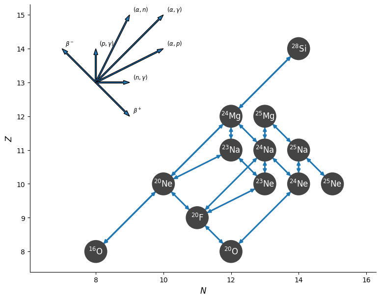
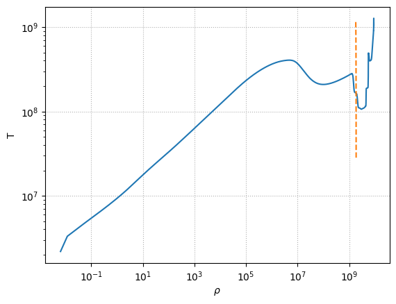
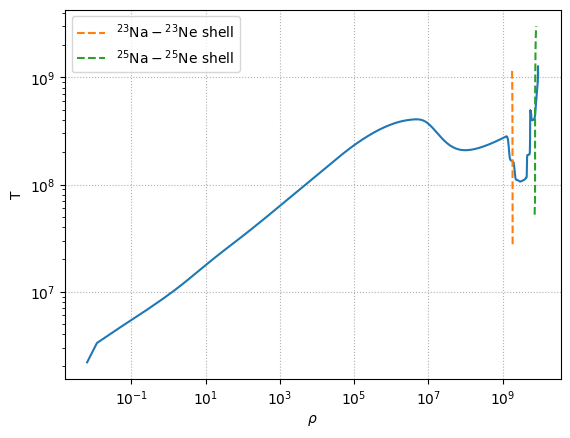

Visualizing Urca shell#
import mesa_reader as mr
Load the MESA model#
read in profile from lab 3
model = mr.MesaData("profile2.data")
rho = 10.0**model.logRho
T = 10.0**model.logT
import matplotlib.pyplot as plt
Build a network#
import pynucastro as pyna
from pynucastro import mesa_utils
nuclei = mesa_utils.get_nuclei(model)
net = pyna.network_helper(nuclei)
fig = net.plot(legend_coord=(13, 8))

Compute the curve for electron-capture = beta-decay#
We need the \(Y_e\), so we’ll take the composition from the surface of the model—it doesn’t matter too much
mesa_zones = mesa_utils.get_all_data(model)
_, _, comp = mesa_zones[0]
comp.ye
0.49871304347826084
We’ll use Brent’s method for root-finding. There will be a very tight range where we get a shell, outside of which the root-finding will fail, so we’ll use NaNs to indicate these failures.
This function will take the EC and beta-decay rates and return the \(\rho(T)\) curve for the shell, \(\lambda_\mathrm{ec} = \lambda_{\beta\mathrm{\mbox{-}decay}}\)
import numpy as np
from scipy.optimize import brentq
def find_urca_shell(r_ec, r_beta):
# grid of density to search
rhos = np.logspace(8.5, 10.0, 1000)
Ts = np.zeros_like(rhos)
for i, r in enumerate(rhos):
try:
# we need a temperature bound to bracket the search
Ts[i] = brentq(lambda _T: (r_beta.eval(_T, rho=r, comp=comp) -
r_ec.eval(_T, rho=r, comp=comp)),
2.e7, 3.e9)
except ValueError:
Ts[i] = np.nan
idx = np.where(~np.isnan(Ts))[0]
T_urca = Ts[idx]
rho_urca = rhos[idx]
return rho_urca, T_urca
Na23-Ne23 shell#
r_ec = net.get_rate_by_name("na23(,)ne23")
r_beta = net.get_rate_by_name("ne23(,)na23")
rho_urca_23, T_urca_23 = find_urca_shell(r_ec, r_beta)
fig, ax = plt.subplots()
ax.loglog(rho, T)
ax.loglog(rho_urca_23, T_urca_23, ls="--", label=r"${}^{23}\mathrm{Na}-{}^{23}\mathrm{Ne}$ shell")
ax.set_xlabel(r"$\rho$")
ax.set_ylabel("T")
ax.grid(ls=":")

Na25 - Ne25 shell#
r_ec = net.get_rate_by_name("na25(,)ne25")
r_beta = net.get_rate_by_name("ne25(,)na25")
rho_urca_25, T_urca_25 = find_urca_shell(r_ec, r_beta)
ax.loglog(rho_urca_25, T_urca_25, ls="--", label=r"${}^{25}\mathrm{Na}-{}^{25}\mathrm{Ne}$ shell")
ax.legend()
fig
